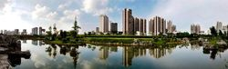
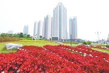

经济
综述
2015年来宾地区生产总值完成557.70亿元，比2014年增长3.4%；2015年全社会固定资产投资498.15亿元，比2014年增长3.2%；2015年财政收入50.02亿元，比2014年下降13.9%；2015年社会消费品零售总额145.11亿元，比2014年增长8.2%；城镇居民人均可支配收入27077元，比2014年增长6.6%；农村居民人均可支配收入8379元，比2014年增长8.1%。[4]
第一产业
2015年来宾市农林牧渔业总产值224.22亿元，比2014年增长2.1%。其中，种 植业产值133.32亿元，比2014年增长1.3%；林业产值15.60亿元，比2014年增长5.2%； 牧业产值62.65亿元，比2014年增长2.3%；渔业产值6.74亿元，比2014年增长4.6%，农林牧渔服务业产值2.91亿元，比2014年增长5.5%。 实现农林牧渔业增加值139.52亿元，比2014年增长2.1%。
2015年粮食种植面积172.67千公顷，比2014年减少0.67千公顷；油料种植面积15.78千公顷，比2014年增加1.26千公顷；甘蔗种植面积150.21千公顷，比2014年减少16.21千公顷；蔬菜种植面积56.61千公顷，比2014年增加2.66千公顷；木薯种植面积7.63千公顷，比2014年增加0.3千公顷；果园面积42.1千公顷，比2014年增加6.9千公顷；桑园面积38.9千公顷，比2014年增加1.6千公顷。
2015年粮食产量81.57万吨，比2014年减少0.25万吨，比2014年下降0.3%。其中，夏粮产量46.95万吨，比2014年下降0.1%；早稻产量35.61万吨，比2014年下降1.3%；秋粮产量33.24万吨，比2014年下降0.6%。油料产量3.88万吨，比2014年增长8.0%；甘蔗产量1204.78万吨，比2014年下降3.0%；蔬菜产量（含食用菌）120.47万吨，比2014年增长6.6%；园林水果产量47.93万吨，比2014年增长10.0%。
2015年生猪存栏117.51万头，比2014年增长8.9%。2015年生猪出栏144.56万头，比2014年下降2.1%。2015年猪、牛、羊、禽肉类总产量14.96万吨，比2014年下降0.5%。其中，猪肉产量10.81万吨，比2014年下降2.1%；牛肉产量1.55万吨，比2014年增长5.9%；羊肉产量0.33万吨，比2014年增长5.1%；禽肉产量2.27万吨，比2014年增长2.1%。2015年禽蛋产量0.41万吨，比2014年增长4.8%。牛奶产量0.55万吨，比2014年增长2.4%。蚕茧产量6.69万吨，比2014年增长2.4%。水产品产量6.66万吨，比2014年增长5.1%。2015年木材采伐量173.3万立方米，比2014年增长1.2%。松脂产量1.91万吨，比2014年增长2.1%。[4]
第二产业
2015年全市工业总产值534.13亿元，比2014年下降2.6%，其中，规模以上工业总产值505.44亿元，比2014年下降3.1%。全部工业增加值158.59亿元，比2014年下降0.1%。规模以上工业增加值比2014年下降0.8%，其中，轻工业比2014年下降7.0%，重工业比2014年增长2.0%。
主要行业中，农副食品加工业增加值比2014年下降13.3%，其中，制糖业比2014年下降17.2%；有色金属冶炼及压延加工业比2014年增长3.3%；黑色金属冶炼及压延加工业比2014年下降3.9%；电力生产和供应业下降比2014年5.5%，其中，电力生产业比2014年下降8.6%，电力供应业比2014年增长6.7%。
2015年规模以上工业主营业务收入449.44亿元，与2014年持平；利税总额18.75亿元，比2014年增长5.2%；盈亏相抵后净亏损21.59亿元，同比增亏52.9%。
分行业看，农副食品加工业实现利润5.26亿元，由亏转盈；电力生产和供应业实现利润3.47亿元，比2014年下降24.6%；有色金属冶炼加工业亏损8.36亿元，增亏92.6%；黑色金属冶炼加工业亏损5.05亿元，增亏105.3%。
2015年全社会建筑业增加值59.46亿元，比2014年增长12.1%。[4]
第三产业
2015年进出口总额6722万美元，比2014年下降37.1%。其中，出口总额4003万美元，比2014年下降14.4%，进口总额2719万美元，比2014年下降54.6%。从出口企业性质看，外商投资企业出口2233万美元，比2014年下降20.0%；其它企业出口1780万美元，比2014年下降36.8%。
2015年批准项目合同外资额4033亿美元，比2014年增长67.1%；外商直接城市风光2966万美元，比2014年增长252.3%。
2015年累计接待游客1545.28万人次，同比增长26.8%。其中，入境旅游人数2.01万人次，比2014年增长5.8%；国内游客1543.28万人次，比2014年增长26.8%。实现旅游总收入102.68亿元，比2014年增长35.3%。
其中，入境旅游收入902.28万美元，比2014年增长10.7%；国内旅游收入102.09亿元，比2014年增长35.4%。[4]